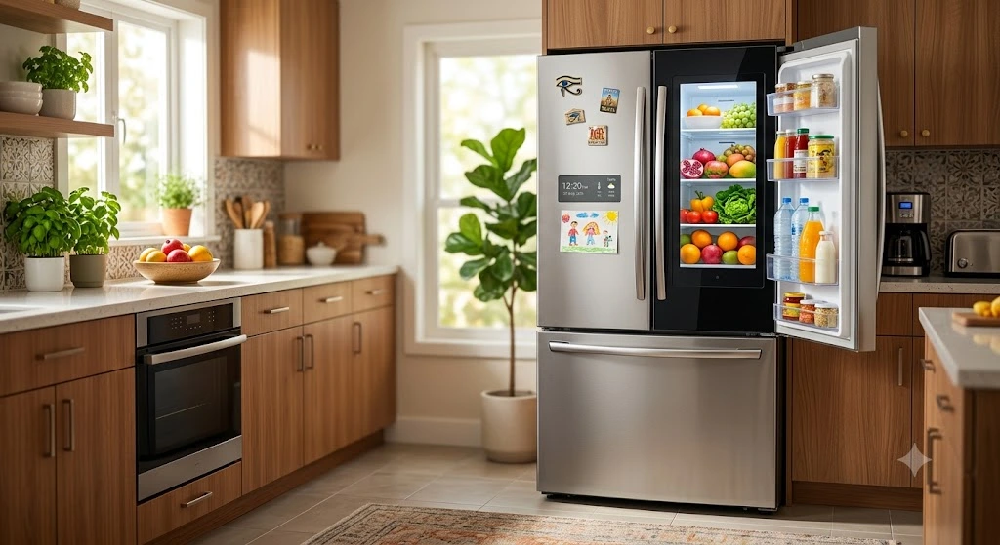
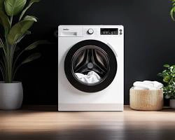
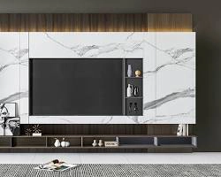
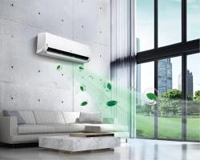

ثلاجات وديب فريزر

دليل الأعطال الشائعة للثلاجات والديب فريزر وكيفية الحفاظ عليها
ضعف التبريد وتراكم الثلج من المشاكل الأكثر انتشاراً، تعرف على الحلول والوقاية...

مقالات متخصصة تشرح لك كيفية التعامل مع الأعطال الشائعة والحفاظ على كفاءة الأجهزة المنزلية

ضعف التبريد وتراكم الثلج من المشاكل الأكثر انتشاراً، تعرف على الحلول والوقاية...

حلول مشاكل عدم طرد المياه والاهتزاز العنيف ورائحة الغسيل غير المرغوبة...

تشخيص مشكلة الشاشة السوداء مع وجود الصوت والطريقة الصحيحة لتنظيف البانل...

كيف تتجنب ضعف التبريد وتسريب المياه الداخلي قبل بداية فصل الصيف...